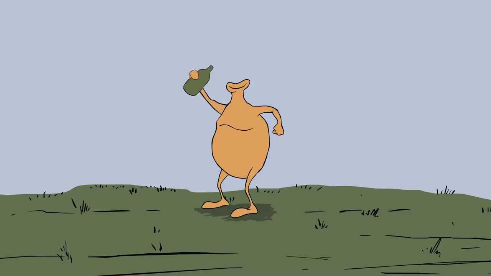

Need help? Call Alcoholics Anonymous
Home | Joe's Eggs | Chicken Recipes
Joe Bob worked 30 years as factory worker at Foster Farms. On his last day before retirement, Joe Bob was decapitated in a ceiling fan mishap. It was unfortunate, he just wanted to provide for his family. After his family left him, he turned to alcoholism to ease his suffering.
Learn from Joe Bob's story.
Need help? Call Alcoholics Anonymous